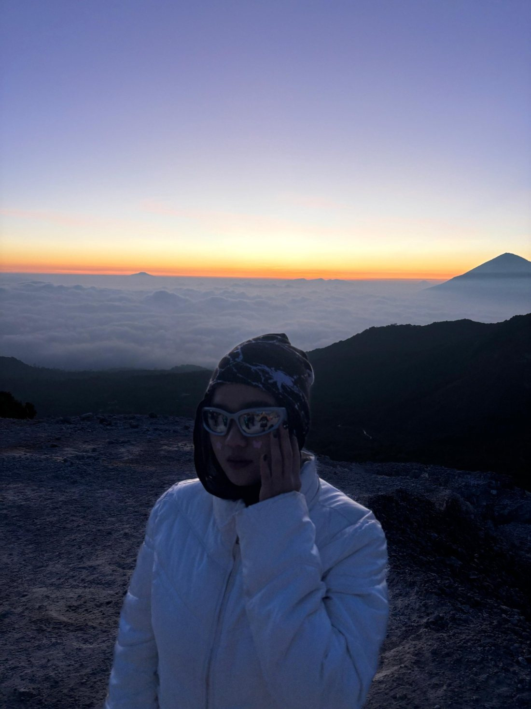

Konten dan media sosial
Mengelola Instagram dan TikTok, menjadwalkan konten harian, menulis naskah promosi dan keterangan unggahan, menyusun perencanaan konten, serta siaran langsung untuk berinteraksi dengan audiens.
Pemasaran kreatif dan administrasi
Saya Dahlia, pelaku pemasaran kreatif dan admin di industri travel umrah. Saya mengurus media sosial, promosi, dan data jamaah, dari unggahan pertama sampai daftar manifes terakhir.

Administrasi
Daftar manifes, daftar kamar, dan Siskopatuh
Kreatif
Konten, naskah promosi, dan siaran langsung
Tentang saya
Saya Raden Dahlia Zakiyatin Nufus, pelaku pemasaran kreatif dan admin yang berpengalaman di industri travel umrah. Peran saya mencakup pemasaran kreatif, pembuat konten, pengelola media sosial, dan kepala administrasi, mulai dari pengelolaan konten dan media sosial sampai administrasi operasional.
Saya tertarik besar pada media sosial. Saya kreatif, nyaman bekerja dalam tim, dan selalu proaktif mengembangkan keterampilan baru untuk mendukung tujuan bersama.
Pengalaman mengajar Al-Qur’an dan menjadi guru praktikan melatih saya menjelaskan sesuatu dengan jelas dan sabar. Kebiasaan itu terbawa ketika saya melayani pertanyaan dan keluhan jamaah.
Keahlian
Mengelola Instagram dan TikTok, menjadwalkan konten harian, menulis naskah promosi dan keterangan unggahan, menyusun perencanaan konten, serta siaran langsung untuk berinteraksi dengan audiens.
Menyusun strategi pemasaran paket umrah dan haji secara daring dan luring, serta menjalin kerja sama dengan tokoh dan pemengaruh media sosial, dari pengarahan sampai negosiasi kompensasi dan hasil kerja yang disepakati.
Mengelola data jamaah, daftar manifes, daftar kamar, dan pengajuan Siskopatuh, menyusun rencana perjalanan, serta melayani jamaah lewat WhatsApp, telepon, atau tatap muka.
Strategi dan karakter kerja
Perangkat
Pengalaman
Nov 2024
sampai Okt 2025
Ghufran Travel, Bandung
Berhasil meningkatkan jumlah pengikut akun TikTok @ghufran.travel
Sep 2024
sampai 12 Feb 2025
SMP Plus Al Ghifari, Bandung
Jan 2022
sampai Juli 2024
Lembaga Tahsin UQOY Private, Bandung
Pendidikan
Sarjana (S1)
Universitas Islam Negeri Bandung
2021 sampai September 2026
Sekolah menengah atas
2018 sampai 2021
Kontak
Saya terbuka untuk berdiskusi tentang konten, promosi, atau administrasi operasional.
© 2026 Raden Dahlia Zakiyatin Nufus